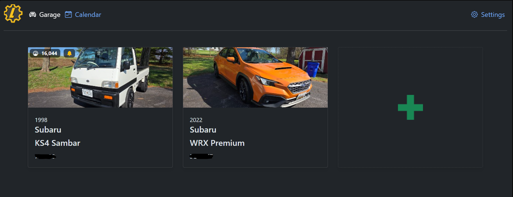
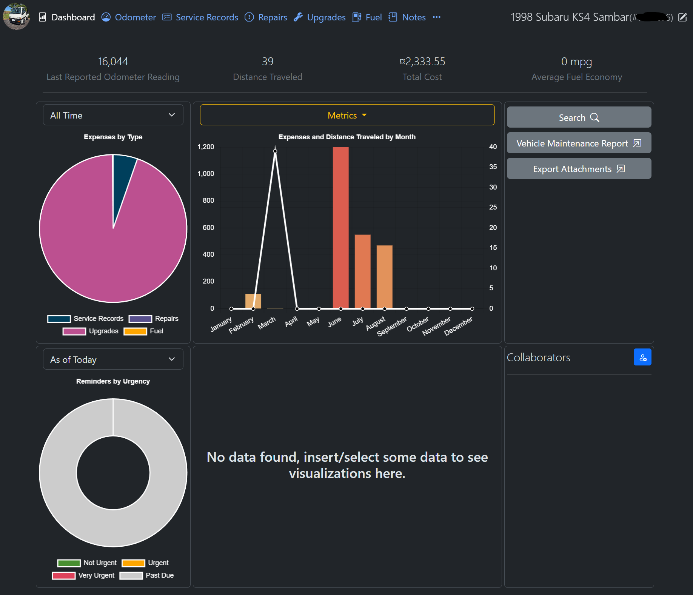

LubeLogger
Self-hosted vehicle maintenance tracking system running inside my homelab.
Overview
LubeLogger is my primary system for tracking vehicle maintenance, service history, and ongoing work across my vehicles. Instead of relying on third-party apps, this is fully self-hosted and integrated into my home network.
It allows me to keep track of oil changes, mileage intervals, repairs, and general upkeep in a structured and centralized way. This turns what would normally be scattered notes into a consistent system I actually use day-to-day.
Deployment & Setup
LubeLogger is hosted on a dedicated Ubuntu Server virtual machine running inside Hyper-V on my homelab system.
The VM was provisioned with a 20GB disk, keeping it lightweight while still allowing room for growth as more data is logged over time.
On the network side, the system is integrated through OPNsense, where it was assigned a static IP address to ensure consistent access across the network.
Internal DNS was configured so the service can be accessed using: lubelogger.home.arpa instead of needing to remember an IP address. This keeps everything clean and consistent with the rest of the homelab environment.
Real-World Use
This system is actively used as my main method for tracking everything related to my vehicles. Every oil change, repair, and maintenance task gets logged, giving me a full history of what has been done and when.
It is especially useful for keeping track of:
- Oil changes and fluid intervals
- Mileage-based maintenance
- Parts replaced and troubleshooting history
- Ongoing or future work that needs to be completed
Over time, this builds a detailed record for each vehicle, making it easier to diagnose issues, stay on schedule, and avoid missing maintenance.
Why I Built This
Most existing solutions either require subscriptions, lack flexibility, or don’t integrate well into a self-hosted environment. This project solves that by keeping everything local, fast, and fully under my control.
It also serves as a practical example of combining IT infrastructure with real-world use — bridging homelab systems with everyday applications.
Screenshots
Screenshot of Dashboard and Car

